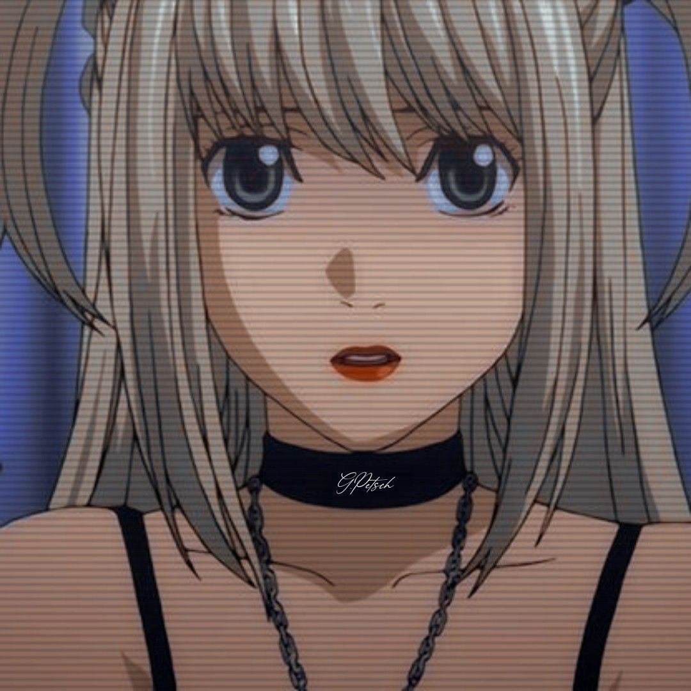

Миса Аманэ (弥 海砂, Аманэ Миса) — перспективная модель и сторонница Киры, которая в конечном итоге становится вторым Кирой. Получив тетрадь смерти, она ищет Киру, чтобы поблагодарить его за убийство человека, который напал на её семью, и предложить ему свою помощь. Купив глаза шинигами, Миса узнаёт, что личность Киры — это Ягами Лайт. После встречи с Лайтом она решает посвятить свою жизнь помощи ему и помочь узнать настоящее имя L.
Миса — низкая, стройная привлекательная девушка.[1] В манге её глаза преимущественно бледно-карие; однако порой они кажутся зелёными. В аниме они то светло-карие, то голубые. Её глаза становятся ярко-красными, когда она использует силу глаз шинигами; благодаря им она видит имя и продолжительность жизни человека у него над головой. В играх её глаза обычно светло-карие, но иногда бывают розовыми. В фильме у неё чёрные волосы, завязанные в хвостики. Миса часто одевается в готическом и панк-стиле, хотя после пропущенного времени между смертью L и появлением Ниа её стиль существенно меняется. Миса, как правило, носит украшения в форме крестов, хотя в аниме-адаптации они были заменены на геральдические кресты
Получив тетрадь, Миса отправляет на «Сакура ТВ» видеозаписи с целью привлечь внимание Киры и добиться встречи. В аниме и манге: в этой записи она называет себя Кирой, однако L сразу обнаруживает, что она отличается от изначального, первого Киры («новый Кира» умеет убивать, не зная имени). Детективы составляют ложное послание от первого Киры, которому Миса охотно верит. Миса делает ещё одно видео, в котором она предлагает первому Кире встретиться с ней. Она присылает на «Сакура ТВ» дневник, в котором зашифровано место встречи — Аояма, клуб «Note Blue». Лайт отправляется туда под предлогом расследования. В фильме: Миса представляется как второй Кира и просит первого Киру прийти. Во время трансляции она находится в здании «Сакура-ТВ». Ягами Лайт едет туда под предлогом, что заберёт отца и сестру оттуда. Миса и Боги смерти Миса имела покровителей среди Богов смерти. Вначале это был Джелос. Он продлил жизнь Мисы ценой своей жизни, записав имя её убийцы в Тетради Смерти, ведь Боги смерти не имеют права продлевать жизнь кому-либо, а тот, кто нарушает это правило — умирает. Другая Богиня смерти — Рэм — присутствовала при этом и решила передать оставшуюся после Джеласа тетрадь Мисе. Кроме того, Рэм сама является в человеческий мир и следует за Мисой, оберегая её. Позднее (эпизод 25) Рэм тоже умирает ради Мисы: она записывает в свою Тетрадь Смерти имена L и Ватари, после чего рассыпается. При этом сама Миса особых чувств к Богам Смерти не испытывала. Узнав от Рэм историю Джеласа, она сказала только: «Так значит, Бога смерти, который меня спас, звали Джелас». А про смерть Рэм она вообще никогда ничего не говорила. По-видимому, её это и не особо интересовало. Владение Тетрадью Смерти и Глазами Бога Смерти Deathnote3103LG Глаза Бога Смерти Впервые Миса получила тетрадь Джеласа от Рэм (11 серия аниме, 3 том манги). Тогда же она получила и Глаза Бога Смерти. Затем, арестованная L по подозрению в том, что она — второй Кира, Миса отказалась от прав на Тетрадь Смерти и потеряла Глаза Бога смерти вместе с памятью. По поручению Лайта, после того, как L отпустил её, Миса откапывает Тетрадь Смерти. Это была та же тетрадь, которой Миса пользовалась до этого, но теперь её богом смерти стал Рюк. Выполняя просьбу Лайта, Миса должна была сообщить ему имя L, но она забыла это имя, и поэтому совершает с Рюком сделку и снова получает Глаза Бога Смерти, но укорачивает продолжительность своей жизни ещё в два раза. После смерти L, Миса активно пользуется своими Глазами, помогая Лайту вершить правосудие. Когда Ниа начинает подозревать Лайта слишком сильно, Лайт заставляет Мису отказаться от прав на тетрадь. Миса снова теряет память о тетрадях и синигами. Хотя её собственный срок жизни уменьшился в четыре раза из-за двух сделок на глаза бога смерти, тем не менее, у Мисы ещё есть остатки сроков жизни двух синигами, пожертвовавших своими жизнями ради неё - 1/4 срока Джеласа и весь срок Рэм. Вполне вероятно, в этих авантюрах она особо ничего и не потеряла. Отношения с Ягами Лайтом При первой встрече с Лайтом, Миса сразу показала ему свою тетрадь смерти, а при дальнейшем диалоге просит сделать его своей девушкой и предлагает ему взять её тетрадь, говоря, что если она станет ему Лайту не нужна, то он сможет убить её. По её собственным словам, её родители были убиты во время ограбления, а суд вынес оправдательный приговор виновному, но позже виновный был убит Кирой. Этим Миса оправдывает своё сильное доверие и любовь к Кире. Чуть позже Миса говорит, что она постарается, чтобы Лайт полюбил её. Из этой фразы можно сделать вывод, что Лайт был ей интересен не только в качестве делового партнёра, но и в качестве второй половинки. До потери памяти от отказа владения тетрадью смерти, Лайт холодно относился к Мисе холодно и воспринимал её лишь как своего помощника. После отказа от тетради, и, вследствие потери памяти, Лайт стал более мягок к Аманэ: он не соглашался на предложение L воспользоваться чувствами девушки ради расследования, также Лайт не хотел подвергать её опасности, даже беспокоился за неё, считая себя ответственным за влюблённую в него девушку, хотя ему и не нравились ухаживания Мисы. Но сразу после возвращения памяти к Лайту, его чувства к Мисе стало прежними, и он продолжил манипулировать ею. После смерти L, Лайт и Миса начали жить вместе. Миса была счастлива, что может помочь Лайту строить новый мир. В конце концов Лайт пообещал жениться на ней.
В манге: Она жила ещё год, а потом совершила самоубийство в день всех влюблённых (День святого Валентина). В аниме: В аниме не показана смерть Мисы, хотя в последней серии она показана стоящей за ограждением на вершине небоскрёба, но намек на самоубийство слишком неявный. В путеводителе по аниме «Death Note A Animation Official Analysis Guide» написано, что дата смерти героини неизвестна (возможно, 14 февраля 2014). Результат ее первой сделки о покупке глаз был аннулирован смертью Рэм, но вторая осталась в силе. Таким образом из-за сокращения жизни в 2 раза девушка вряд ли проживет среднюю жизнь, однако, у нее есть остатки жизней Джелоса и Рэм, которые имеют совершенно неизвестную величину.